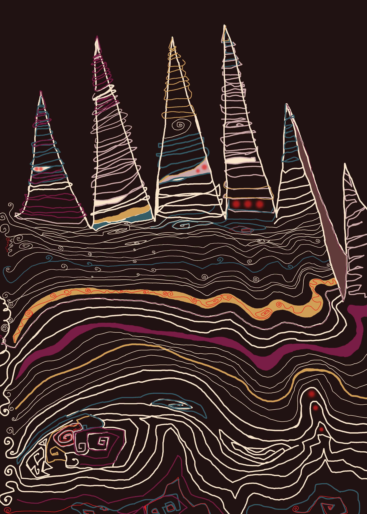
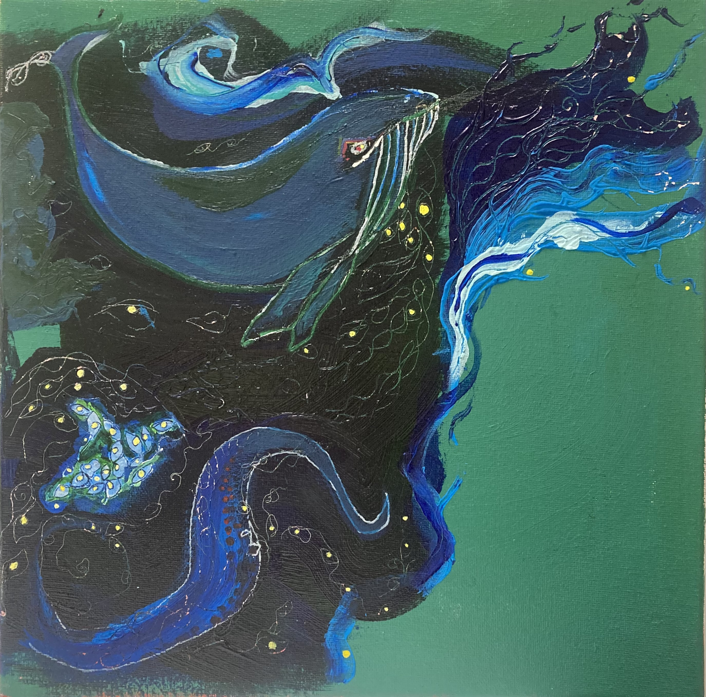
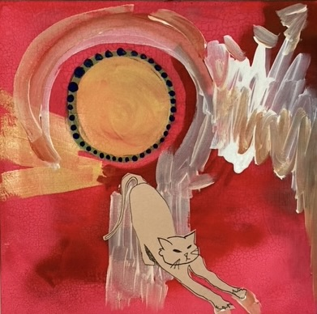
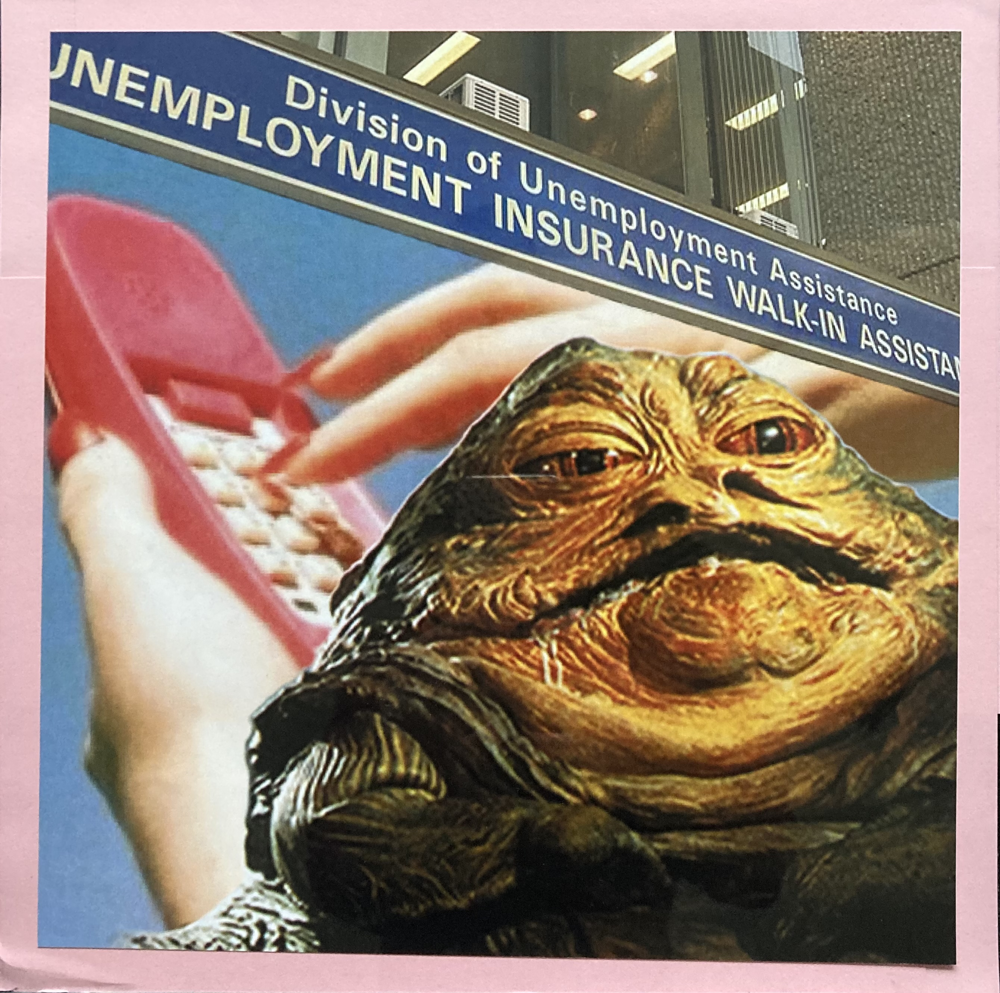
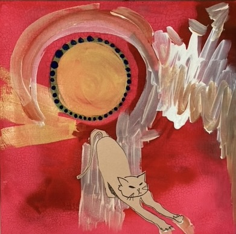
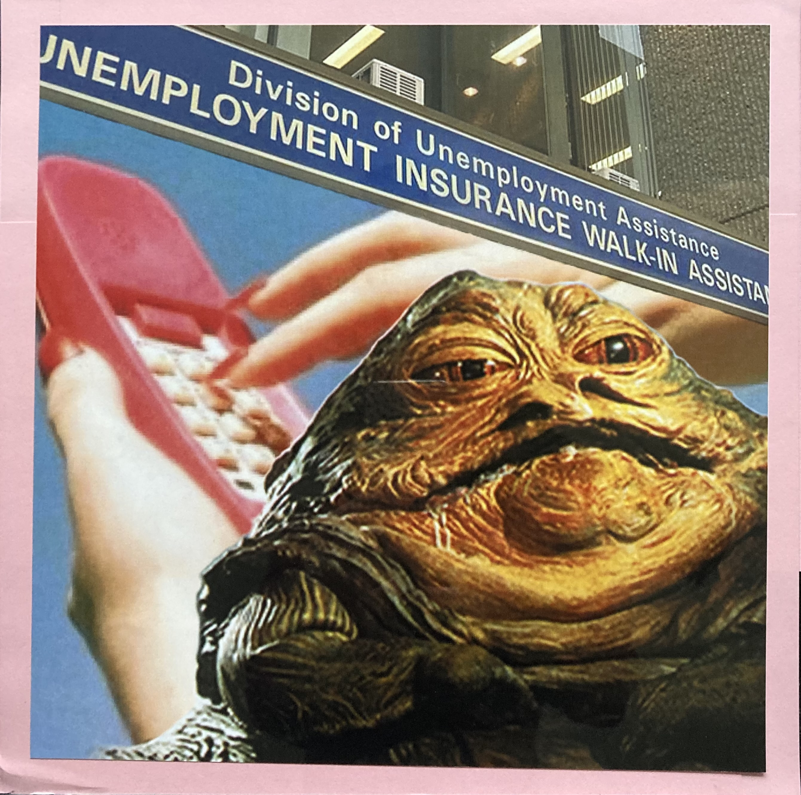
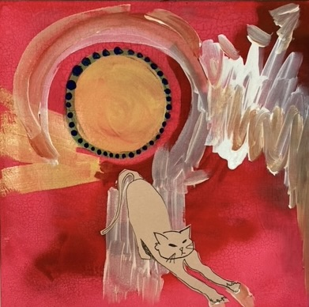
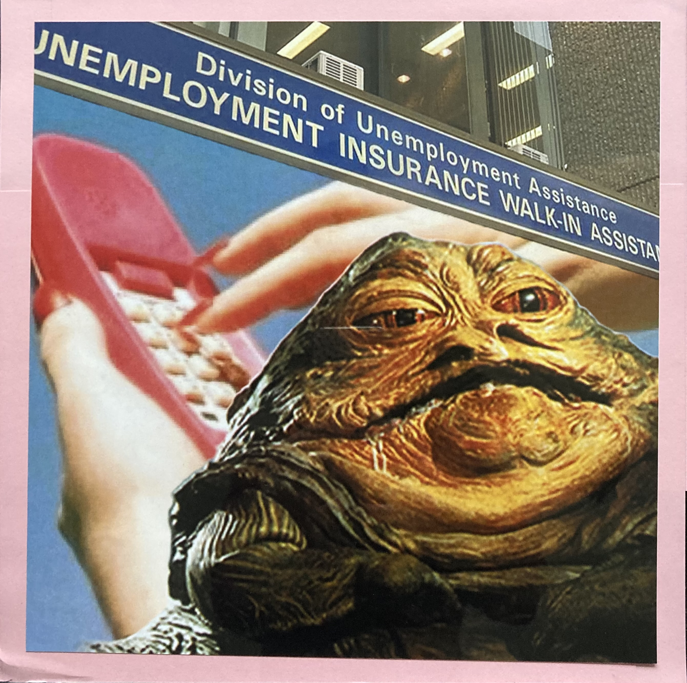

Portfolio
Home
Portfolio
More Info
Art Projects

"Ridge"
- Digital illustration, 2022

"Scorpio Moon"
– Acrylic and ink on canvas, 2025
"Swoosh"
- Pen and ink, 2024

"Sun Worshipper"
– Acrylic and ink on paper, 2021

"Assistance"
– Mixed media collage, 2020
 "Swoosh" - Pen and ink, 2024

"Sun Worshipper" – Acrylic and ink on paper, 2021

"Assistance" – Mixed media collage, 2020
"Swoosh" - Pen and ink, 2024

"Sun Worshipper" – Acrylic and ink on paper, 2021

"Assistance" – Mixed media collage, 2020